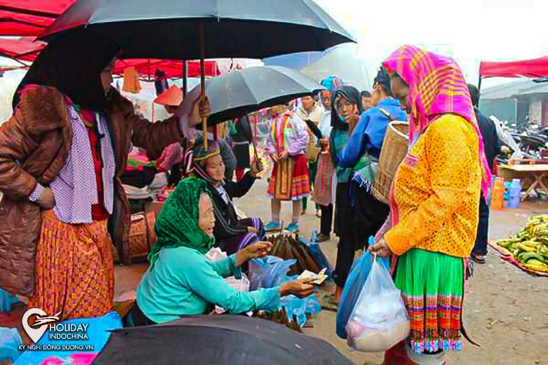

HUYỆN YÊN MINH
Yên Minh là một trong những huyện nhỏ của Hà Giang nằm ở khu vực Đông Bắc của tỉnh Hà Giang, phía bắc Yên Minh giáp với tỉnh Vân Nam của Trung Quốc phía Đông Giáp với huyện Mèo Vạc, phía Tây giáp với huyện Quản Bạ phía Nam giáp với huyện Bắc Mê. Huyện Yên Minh nằm trên khu vực đường quốc lộ 4C cách với thành phố Hà Giang khoảng 98 km.
Là một huyện của tỉnh Hà Giang nhưng đây cũng là một trong những huyện có nhiều địa điểm du lịch hấp dẫn đối với rất nhiều khách du lịch đến tham quan nơi đây từ khu vực thành phố Hà Giang bạn phải đi qua huyện Quản Bạ thì mới đến được với vùng đất Yên Minh để khám phá được hết những phong cảnh đẹp của nơi đây.
CHỢ BẠCH ĐÍCH

Dọc theo đường Quốc lộ 4C từ Tp Hà Giang, sau khoảng 70km, đến địa phận xã Na Khê và cách thị trấn Yên Minh chừng 20 km thì rẽ trái (có biển chỉ dẫn) đi khoảng 20 cây số nữa là đến xã Bạch Đích. Bạch Đích là xã biên giới với 6 thôn bản giáp ranh Trung Quốc, tổng chiều dài đường biên hơn 7 km. Xã có một nét riêng, độc đáo, không nơi nào tại đây có được là có đến 3 phiên chợ trong một tháng, gồm: chợ Bản Muồng, chợ Mốc 358 và chợ trung tâm xã. Các chợ đều họp theo phiên vào ngày Thân và ngày Dần hằng tháng.
Nói đến chợ Mốc 358 hay còn gọi là chợ Mốc 9, đây vừa là chợ phiên, lại vừa là chợ cửa khẩu; nằm ngay bên chân mốc, đi thêm chục bước chân là chạm tới barier Cửa khẩu Bạch Đích. Chợ họp theo phiên, nếu không đúng phiên, cửa khẩu dù vẫn hoạt động bình thường nhưng khu chợ vắng bóng kẻ mua, người bán. Chợ Mốc 358 được thành lập từ năm 2007, là nơi giao lưu buôn bán và mua sắm hàng hóa giữa nhân dân địa phương với người dân phía bên kia biên giới. Chợ họp từ khoảng 6 giờ đến tầm 12 – 13 giờ trưa, các quầy hàng nằm dọc 2 phía biên giới, cách đường biên chừng 10m.
RƯNG THÔNG

Yên Minh cách thành phố Hà Giang khoảng 100km về phía Đông Bắc, men theo quốc lộ 4C chạy từ Cán Tỷ lên trung tậm phố huyện qua ba xã: Bạch Đích, Na Khê, Lao Và Chải có một cung đường đẹp như mơ khiến bạn tựa như đang đứng giữa Đà Lạt mông mơ vậy. Cung đường đẹp rừng thông Yên Minh bắt đầu từ đoạn xã Na Khê cho đến Thị trấn Yên Minh, đoạn quốc lộ 4C với hai bên đường bạt ngàn thông.
NÀ LUỒNG

Nà Luồng, cách trung tâm thị trấn Yên Minh khoảng 25km, thuộc địa phận thôn Nà Luồng, xã Mậu Long và giáp với xã Lũng Phìn của huyện Đồng Văn mới được tìm thấy năm 2010 được đánh giá là hang đẹp nhất so với các hang đã từng được phát hiện ở Hà Giang